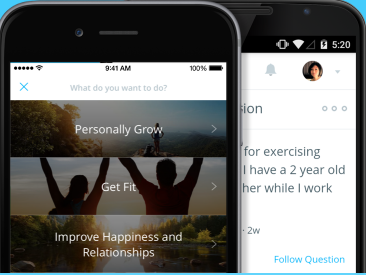

Turn Intention
into
Focused Action

Many people try to do too many things when it comes to accomplishing their goals. As a result we end up feeling overwhelmed and unproductive. This app helps to address the disconnect between our goals and activities.
The Essentialism app allows you to focus on fewer activities and bring you closer to your goals. You simply identify your top 3 values and create a list of your current activities.
Then the app does a side by side comparison to determine if your activities bring you closer to your goals.
By editing, adding and deleting activities, you can keep track of your progress in real time.